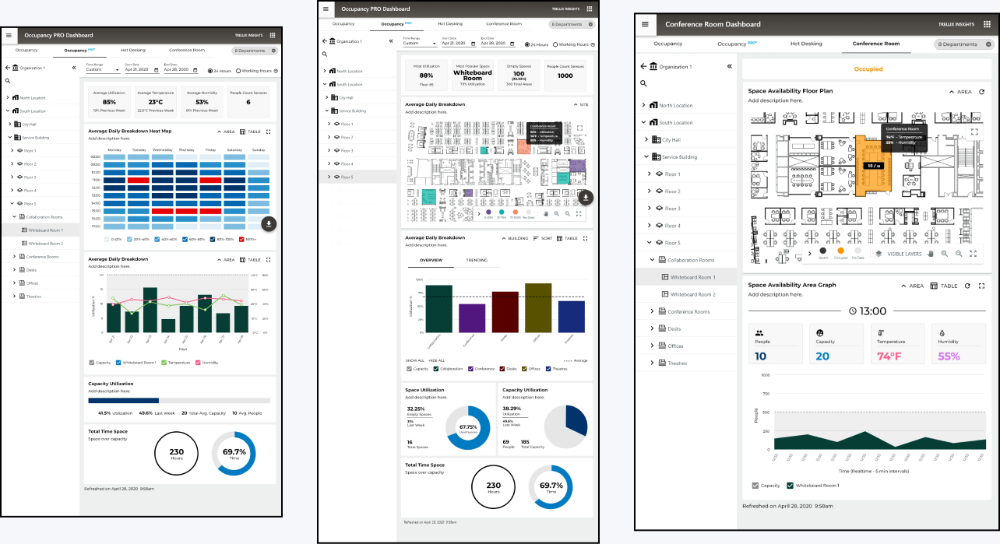
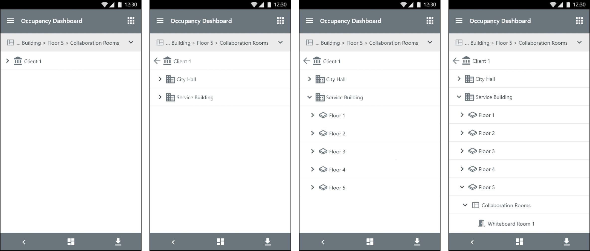

Case 02 CORE Insights Cooper Lighting
CORE Insights
Every ceiling light in a big office has a small sensor in it that notices when someone walks into the room. Those sensors had been quietly counting people for years and nobody was looking. I built the screen that finally showed what they had seen. No new equipment, no new wiring, nothing to install.
- Role
- Lead designer
- Scope
- First interview through to shipping
- Team
- 15 people, all doing different jobs
- Released
- 12 rounds of updates, 2020 to 2021
- Drawn in
- Adobe XD

01 What it is
Turning what the lights saw into a picture of the building
CORE Insights is an app that shows how the rooms in a building actually get used. It sits on top of the system that already runs the lights, and it reads the little sensors built into the ceiling fittings. Those sensors have one job: notice whether anyone is in the room, so the lights know whether to stay on.
I led the design. I owned it from the first sketch through twelve rounds of releases: the main screen, the reports, the floor plan, and the move from a computer in the basement to something that runs over the internet. This case study is about one problem in particular. All the information was already there. The people who needed it could not get at it.
-
5
Steps you had to click down through, from the whole company to a single room
-
21+
Sensors watching a typical floor
-
Unlimited
Rooms covered by one purchase
The short version
- What it runs on
- WaveLinx CORE, the system that controls a building's lights. There is also a version that runs over the internet, called WaveLinx Cloud
- What I designed
- CORE Insights: the screen that shows how rooms get used, and the reports it prints
- Who uses it
- The people who look after buildings, the people who decide how much office to rent, the teams who keep it all running, and the bosses they answer to
- Where you use it
- On a computer and on a phone
- Where it lives
- On a small box in the building itself, or out on the internet
- Where the numbers come from
- Sensors tucked inside the ceiling lights and in the ceiling itself. Small controllers dotted around the building collect what they see
- What it costs
- Bought once. Every room included, however many there are
- What I did on it
- Interviews, working out how it should be organized, how it should behave, how the charts should be drawn, and testing all of it with real people
02 Why it was worth building
Sensors already in the ceiling, doing nothing useful
Then offices changed. People started coming in some days and staying home on others, and suddenly nobody could say how much space a company actually needed. Finance began asking the facilities teams to prove it. The facilities teams had nothing to prove it with.
Cooper Lighting had something none of the start-ups did: millions of sensors already screwed into ceilings around the world. They had gone up years earlier for a boring reason. The rules say lights have to switch themselves off in an empty room, so something has to notice the room is empty. They had been counting people the whole time. Nobody was showing the count to anyone who could act on it.
CORE Insights was the answer to that. Point the lighting system at a new question and it tells you how the building is really being used. Every office that already had these lights became a customer, with nothing new to buy and nothing new to fit.
-
$0
Extra equipment for the customer to buy
-
4+
Buildings you can watch from one screen
-
310K
Square feet of floor in the building we tested on
-
2
Ways to run it: in the building, or over the internet
03 The problem
The numbers were all there. People could not reach them.
-
~80%
Of people never clicked past the first screen
-
~65%
Of visits ended with someone giving up and starting over
-
5
Steps between the front door and one room
04 What people told me
It was built like a filing cabinet. People do not think in filing cabinets.
Talking to the people who use it
I sat down with five different groups to find out what each of them wanted from the same pile of numbers. The answers barely overlapped.
| Group | What I learned |
|---|---|
| The people who run the building | Turn up with one practical question, like which meeting rooms on the third floor are sitting empty. They want the answer, not a tour. They rarely look deeper than a floor. |
| The people who rent the space | Think in years and buildings, not rooms. They are working out how much office to keep, so they pull everything out at once as a spreadsheet or a report. |
| Operations and IT | Care first about whether the sensors are alive and working. If they cannot trust the numbers, nothing else on the screen matters. |
| Executives | Want one headline figure and a cost they can defend in a meeting. They will never open the tool. They read the PDF somebody hands them. |
| The electricians who fit the lights | Are up a ladder, checking each sensor can see what it is meant to see. For them this is a tool for one week of checking, not a daily habit. |
Counting the clicks
Then I took the five things people did most often and counted what each one cost them: how many clicks it took, and how often they had to give up and start again.
| The job | Clicks | How it felt |
|---|---|---|
| Check how busy one floor is on average | 4 to 6 | Some effort |
| Compare two floors against each other | 10 to 14 | Hard going |
| Find meeting rooms nobody is using | 7 to 9 | Hard going |
| Make a PDF report for one building | 5 to 7 | Some effort |
| Look at one team spread over several floors | 8 to 12 | Hard going |
05 How it is organized
Five levels, each with its own job
The easy thing would have been to show the same screen at every level, just with smaller numbers on it. I did the opposite. Each level answers a different question, so each level is drawn differently. High up you are comparing things, so you get bars. On a floor you are getting your bearings, so you get a map of the floor. Inside one room you are watching something change through the day, so you get a line.
| Level | What it shows | How it is drawn | What it prints |
|---|---|---|---|
| The whole company | How busy on average, how many rooms sit empty, how many buildings, floors and sensors there are | A bar chart, one bar per building | How busy each space is, now and over time |
| One building | How busy on average, how many rooms sit empty, how many floors and sensors there are | A bar chart, one bar per floor | How busy each space is, plus a room-by-room summary |
| One floor | How busy on average, how many rooms sit empty, the busiest room, how many sensors | A floor plan, with a chart underneath it | How busy each space is, a summary, and the most and least used rooms |
| One kind of room | How busy on average, how many sensors | The floor plan with everything else faded back | How busy that one kind of room is |
| One room | How busy on average, how many sensors | The floor plan zoomed in, with a line over time | Everything known about that one room |
06 Six decisions
Six decisions that changed how it felt to use
-
A trail of breadcrumbs, so you always know where you are
Across the top I put a line showing exactly where you are standing: Cooper Lighting, then McLaughlin Rd, then Floor 1, then Conference Rooms. Every word in that line is a link, so you can hop back up without losing the choices you made on the way down. Just under it, a thin strip keeps showing the headline numbers for the level above.
Why. It cured the feeling of falling down a hole. People will happily dig deeper once they are sure one click brings them back, and the strip means they no longer have to climb all the way up just to check a single number.
-
Numbers you can click
The four big numbers along the top — how busy on average, how many rooms are empty, the busiest room, how many sensors — stopped being just numbers and became doors. Tap "Empty spaces: 30" and the screen filters itself down to exactly those thirty rooms.
Why. This is that finding about questions, made real. You start with what you want to know instead of with a place on a map, and the questions people asked most are now one tap away.
-
A floor plan colored in by how busy each room is
The plan uses three bands: under 30 percent, 31 to 70 percent, and over 70 percent. Those cut-off points are not decoration. Under 30 percent, a room is a candidate for being merged or given up. Over 70 percent, it needs more of something. Every room also prints its own figure on the plan and appears in a labelled key underneath, so nobody has to tell two shades of the same color apart to read it. Click a room and you are inside it.
Why. The people who run a building picture it as a floor plan, not as a list of room names. Show them the plan and they spot the pattern instantly, and tapping a room skips three levels of clicking.
-
Filters by team, not just by floor
The team filter came out of a buried menu and became a row of buttons that stays on screen. Teams do not sit tidily on one floor: engineering might be spread across three floors in two buildings. So the filter now works at every level, and it stays switched on as you move around.
Why. Companies make decisions team by team, not floor by floor. The filter had to match the way the decision actually gets made.
-
One switch between "right now" and "over time"
The main chart flips between two views. One is a set of bars showing how busy each kind of room is at the moment. The other is a line showing the same thing week after week. Both carry a dashed line for the average, so you can see what sits above it and what sits below, and tick boxes for choosing which kinds of room to include. There is a plain table version too, which sorts by how busy a room is, or by how far it strays from normal.
Why. There are really only two questions here: what is happening now, and is it getting better or worse. One switch, with your filters carried across, lets someone move between them without losing their place.
-
A PDF that knows where you were standing
Hit export and the report takes its shape from wherever you are. Whatever you were looking at becomes the report: the headline numbers, the floor plans, the charts, the tables, the room-by-room summary, and the rankings of most and least used. Every page is branded, stamped with the date and time, and headed with the path you took to get there.
Why. The PDF is what an executive actually sees. If it could not stand up on its own, away from the screen it came from, it would fail in the one room where it mattered most. Building the scope in automatically also meant no more cropping screenshots and typing captions by hand.
What that looks like
The whole company, and one floor
![The top level of the app. Four cards across the top read: busiest floor, 88 percent on Floor 5; most popular room, the Whiteboard Room at 79 percent; empty spaces, 100 out of 300; and 1000 sensors counting people. Below them a floor plan is colored in by how busy each area is, with a pop-up over one meeting room reading 60 percent in use, 74 degrees Fahrenheit and 55 percent humidity. Under the plan, a bar chart compares kinds of room against a dashed average line, and three dials show how much of the space gets used, how full it gets, and the total hours in use.](assets/core-insights/org-site-level.png)
What the numbers say here is that this office is far too big. About 42 percent of the seats are in use and roughly a third of the rooms are sitting empty. That is a very ordinary finding in office property. Companies pay for a lot more room than it turns out they need.
The more interesting gap is between the busiest moment and the average. A room can hit 74 percent at its peak and still average 25 percent across the week. That is not a shortage of space. That is space in the wrong shape, and it calls for a different fix: different rooms, not more of them.
Notice that on a floor, the map takes over as the main picture and the bar chart moves down. That is on purpose. High up you are comparing, so bars win. On a floor you are getting your bearings, so the plan wins.
One room

That grid of the week is the part people actually use. Days run across, hours run down, and the darker a square the busier the room was. It answers "when is this room really busy" faster than any chart could, because the shape of the week is right there in front of you. And down at the level of one room, a plain bar says "this full" far more clearly than a ring or a pie ever does.
On a phone

A floor, right now

Looking back over the last month, the detail matters. You want to know how much a room got used. Looking at right now, the question shrinks to something much simpler. Is it free? So the picture gets simpler too.
Temperature and humidity are far more useful here than in a history view. "This room is too warm right now" is something a manager can get up and do something about.
A room, right now

The chart underneath earns its place by answering something none of the higher levels can: how has this room been used today? Genuinely handy if you are trying to guess whether it will be free in twenty minutes.
Comparing this week against last week makes more sense here than anywhere else in the product. At the level of one named room, managers really do keep score.
Shared desks

Shared desks, or hot desking, means nobody owns a seat. You take whatever is free when you arrive. That makes this one screen do two jobs at once: help somebody find a desk in the next five minutes, and help the person running the floor work out whether it is laid out right.
Drawing every desk is what makes it work for the first person. "There are free desks over in the top right corner" is a thought you can only have if you can see the desks. The grid of busiest times is what makes it work for the second, and for anyone deciding which day is worth coming in.
Meeting rooms
![Three views of the meeting room screen side by side, at building, floor and room level. Each shows a floor plan with one room highlighted and a pop-up of its readings. The first adds a chart of people over time, a table of board rooms, war rooms, classrooms, training rooms and theatres, and a ranking of the five most used meeting rooms from 99 percent down to 67 percent against a full mark of 100 percent. The last shows a single room with cards for people, capacity, temperature and humidity above its own chart.](assets/core-insights/conference-rooms.png)
Managers can watch the meeting rooms live, and look back over what has happened so far to work out how rooms should be booked in future.
What a company actually does with this
-
Stop paying for empty floor
If only 40 percent of your space is ever in use, you are paying rent on a lot of nothing.
-
Make the case for shared desks
This is the evidence that justifies giving up assigned seats, which is why the shared desks view exists at all.
-
Sign a smaller lease
When the lease comes up for renewal, this is what backs up taking less space, or folding two offices into one.
-
Build more of what works
Knowing the whiteboard room is the most popular space in the building, at 79 percent, tells you what to build more of.
07 What changed
What happened once it shipped
These numbers come from the project's own testing with real users and from the usage data the product collects. They were measured once before the redesign, and again after it shipped.
| What we measured | Before | After | Change |
|---|---|---|---|
| Clicks to answer "which rooms are empty?" | 7 to 9 clicks | 1 click, on the number itself | Down 87% |
| People who looked past the first screen | About 20% | About 55% | Up 175% |
| Time to make a report for an executive | 5 to 7 minutes, by hand | Under 30 seconds, one click | Down 93% |
| Visits that ended in giving up and starting over | About 65% | About 25% | Down 62% |
| Getting from the floor plan into one room | 4 to 6 clicks, one level at a time | 1 click, tap the room | Down 80% |
What shipped
-
5
Kinds of report it prints: overview, over time, summary, most popular, and the full PDF
-
3
Ways to draw the same data: bars, a line, or a table
-
2
Places it can run: in the building, or over the internet
How people used it afterwards
-
Up 175%
More people digging past the first screen 20% to 55%
-
Down 62%
Fewer visits ending in giving up 65% to 25%
-
Down 93%
Less time spent making a report 5 minutes to 30 seconds